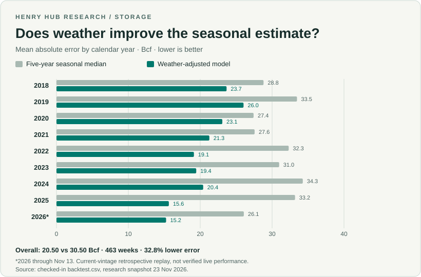

Does observed weather improve weekly storage estimates?
Across 463 weeks, adding observed weather cut the average storage miss from 30.50 to 20.50 billion cubic feet. The seasonal median was still closer on 197 weeks.
Read storage and weatherTwo studies by John Barreto examine the size of a weekly storage miss and the change in a winter gas premium. Each study links its calculations to the underlying observations.
Evidence edition · 23 November 2026. The storage study is a retrospective replay using observed weather and current-vintage data. Its frozen live ledger had no completed scored forecasts. The curve study is a descriptive comparison of two archived snapshots.
Across 463 weeks, adding observed weather cut the average storage miss from 30.50 to 20.50 billion cubic feet. The seasonal median was still closer on 197 weeks.
Read storage and weatherAll nine matched contracts fell between 30 June and 30 September 2026. January 2027 fell $0.639 per million Btu and July 2027 fell $0.160. Follow the change in the January premium back to the filings.
Read curve repricing
The evidence checker recalculates the annual storage errors, the two weekly examples and the nine matched contract changes from the archived files.
Open the reproduction guide